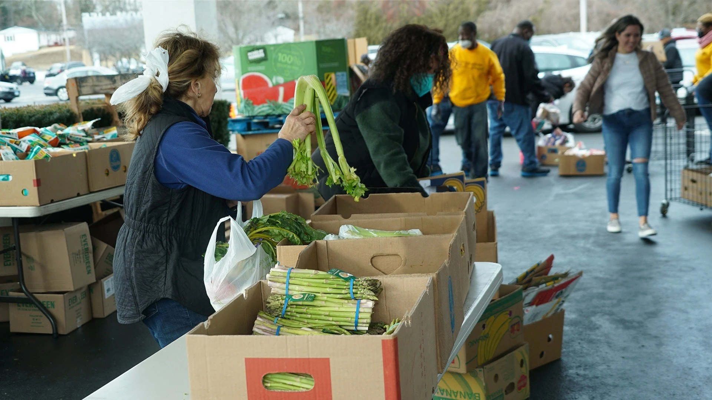

Download the KLCC App and tap Give.
Get the KLCC appKINGDOM LIFE CHRISTIAN CHURCH, INC.
Giving.
Ways to Give
Give through KLCC’s secure online service.
Open secure givingMail to KLCC at
597 Naugatuck Avenue
Milford, CT 06461
Online giving
Support the work
of Kingdom Life.
Your generosity supports the work of Kingdom Life. Continue to KLCC’s existing Subsplash giving service to make your gift.
Give securely onlineChoose the direct service, or open the embedded form below.
Use the giving form on this page
If the form does not load, use the secure direct link.

Why We Give
True Christianity is about living to give. True giving includes our time, talents, gifts and prayers. But it also includes our finances. The Bible teaches that the first portion, or tithe (10%), belongs to God. The commitment to give should be made in obedience to God and with a cheerful heart. God honors that which is offered freely with joy and expectation and not grudgingly, or out of guilt or obligation. While God’s promises say that we will reap a blessing when we give, our motivation is not for receiving but to show God a demonstration of our love and trust.